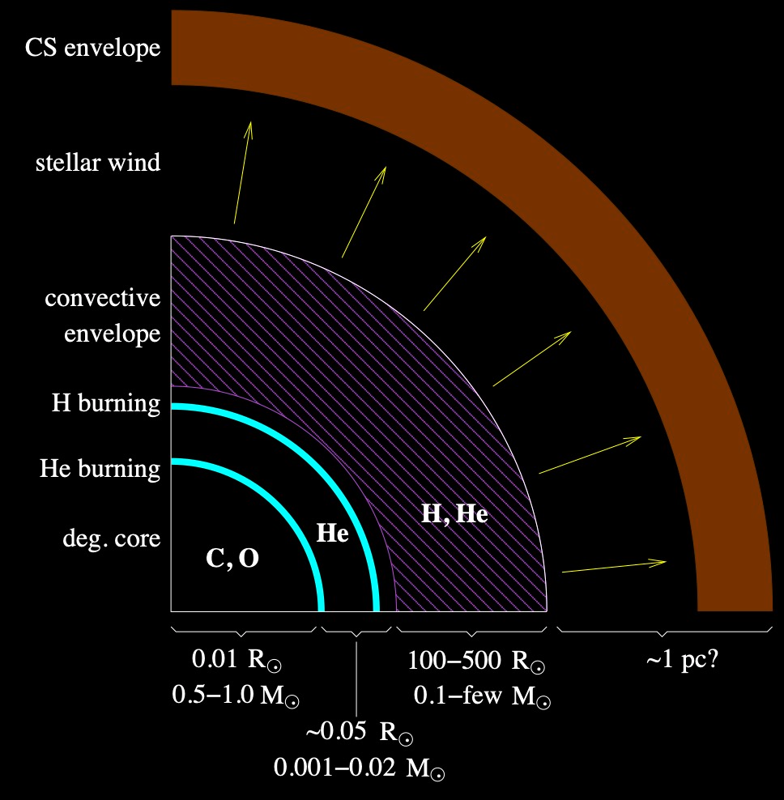
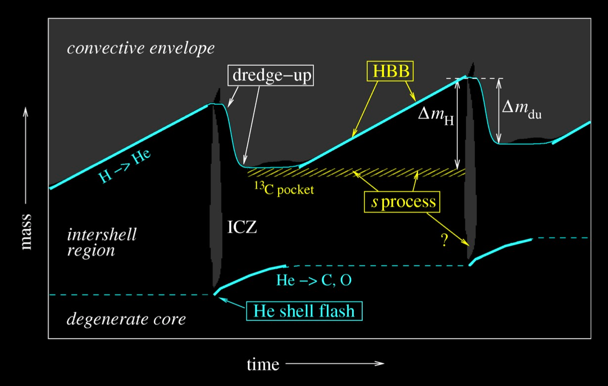
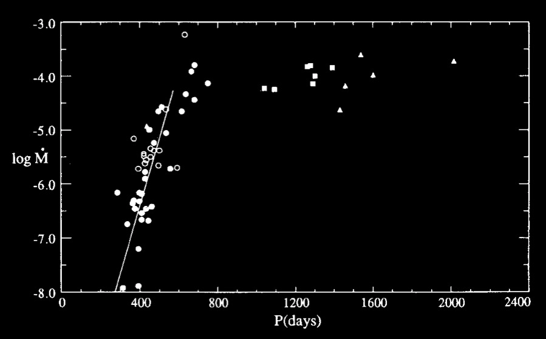
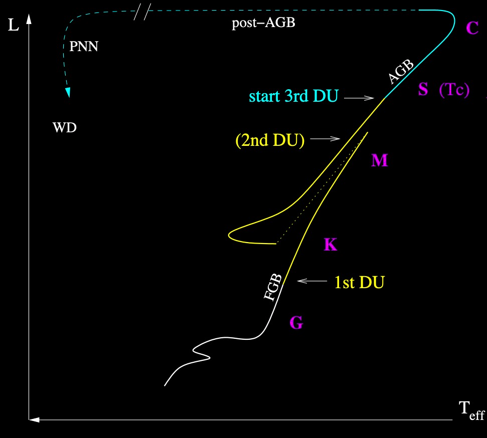

Late evolution of low- and intermediate-mass stars#
Notes partially following Chapter 11, from Onno Pols notes.
Monday, Apr. 21, 2025
astrophysics of stars and planets - spring 2025 - university of arizona, steward observatory
Today’s Agenda#
Announcements - Final Projects Due to D2L May 2 / HW5 posted (2m)
Reading Overview/Key Points (20m)
ICA 27 - AGB and post AGB evolution (20m)
Debrief + Share Results (5m)
The asymptotic giant branch#
The AGB phase starts at the exhaustion of helium in the center. Below we can identify 3 main phases of a star on the AGB.
The early AGB phase - point H#
This phase is characterized by a few key steps:
After He-depletion, all the material below the H-shell contracts until burning proceeds in a He-shell surrounding the now CO core. For a brief period of time, the star has two active burning shells.
However, due to the expansion of the He-rich zone, the H-burning shell temperature decreases and is eventually extinguished. During this time, the CO core continues to contract, the envelope expands in response (mirror principle).
This phase is rather long-lived and the main contribution to the stellar luminosity is primarily the He-burning shell. The ashes of He-shell burning build the mass of the CO which become increasingly degenerate.
{kind=link}
Kippenhahn diagram for a 5\(M_{\odot}\) star during late evolutionary phases.
Second dredge-up#
At a later time the envelope expands and cools and eventually penetrates to a depth of the previous now extinguished H-shell burning region.
This is the scenario for stars with initial mass \(\gt 4 M_{\odot}\) (the boundary at which can be modified due to convective overshoot).
In our above example model above, the Second Dredge Up occurs at point K. This is primarily due to the expansion of the envelope, which leads to cooling and increase of the opacity, as well as the increasing energy production from the He-burning shell.
For lower mass stars, the H-shell is not extinguished and thus prevents the convective envelope from penetrating deeper into the star. The Second Dredge Up therfore does not occur for these models.
The 2DU behaves qualitatively similar to the 1DU but with a more dramatic effect. The primary material brought to the surface is helium and nitrogen-14 via the CNO cycle. In this example this is about 0.2 \(M_{\odot}\) of material.
The thermally pulsing AGB phase#
As the He-burning shell moves outward in mass its luminosity decreases as it runs out of fuel. As a result of this, the layers again contract and the H-burning shell is reignited leading again to a double shell burning scenario.
{kind=link}
Schematic structure of an AGB star during its thermally pulsing phase.
In this double shell burning scenario the He-shell burns in an unstable configuration and leads to thermal pulses. This phases has a number of important consequences on the star:
The pulses are followed by mixing events leading to the production of unique nucleosynthesis events and making the envelope and atmosphere more carbon-rich.
Similar to the RGB luminosity relying on the core mass, the stellar properties on the AGB mainly depend on the size of the degenerate CO core:
Strong mass loss (\(\sim 10^{-7}\) to \(10^{-4}\) \(M_{\odot} \ \rm{yr}^{-1}\)) driven by dynamical pulsations and increased radiation pressure on dust particles in the cool atmosphere. This process gradually removes the envelope and replenishes the ISM.
Brief aside about “thin” shells#
In Sec 7.5.2, secular stability - the stability of thermal equilibrium is discussed and in particular for a thin burning shell:
We can define a burning shell of mass \(\Delta m\), in a star of radius \(R\). The shell is located at a fixed inner boundary \(r_{0}\) and outer boundary \(r\) with thickness \(d=r-r_{0} \ll R\).
Now, consider a perturbation that causes an excess of energy generation to heat flowing out leading to an expansion of the shell to larger radius.
Now, we can say that the shell is stable if this expansion leads to a sufficient pressure drop leading to a temperature drop. That is, the shell is stable if:
For an ideal gas \(\chi_{\rho}=1\), suggesting that a shell thinner than \(d/r \lt 0.25\) will be unstable even for an ideal gas. That is, the increase in energy from a perturbation does not lead to an expansion to a pressure decrease to a temperature decrease to maintain TE, and runaway can occur.
Thermal pulses and dredge-up#
Let’s look closer at the thermal pulse and mixing events:
When the H-shell is reignited the He-burning shell beneath it is geometrically thin and unstable for the reasons discussed above and leads to thermal pulses of the He-shell.
{kind=link}
Schematic evolution of an AGB star through two thermal-pulse cycles. Note that the time axis is highly non-linear: the He shell-flash and dredge-up phases (lasting \(\sim\) 100 years) are expanded relative to the interpulse phase (10\(^4\) − 10\(^5\) years). Mass range depicted is \(\sim 0.01M_{\odot}\).
We can discuss a few key epochs over the course of these events:
H-shell burning adds mass (He) to the intershell region
Once a critical mass is reached in the intershell region reaches a critical value, helium is ignited in an unstable fashion leading to thermonuclear runaway called a Helium Shell Flash.
What was the cause for the Helium Core Flash in the cores of low mass red giant stars?
Values of \(L_{\rm{He}} \sim 10^{8}L_{\odot}\) occur due to the flash over about 1 year and drive an intershell convective zone (ICZ) leading to a dredge up event that mixes synthesized material upward.
The energy from the flash mostly goes into the expansion of the intershell region, allowing the He-shell to expand and cool. The flash fizzle out and dies, the H-shell is extinguished and a phase of stable He-shell burning further grows the CO core.
Expansion and cooling can allow for a third dredge up (3DU) event to further bring ashes of the flash to the surface. 3DU is a term used for dredge up following thermal pulses even for stars without a 2DU event.
Following 3DU, the He-shell is extinguished, the H-shell is reignited and the process repeats until the critical He mass is again reached. The “interpulse period” depends of the core mass and can last from 50,000 years to less than 1000 years.
{kind=link}
In general:
the pulse cycle can repeat many times
the pulse amplitude (the maximum helium-burning luminosity) increases with each pulse
3DU might not occur until after several pulses
3DU is unique that it not only brings up H-burning products but also He-burning products to the surface
We can also define the efficiency for a dredge up event as:
efficient dredge up, \(\lambda\approx1\) can limit to maximum growth of the CO core and thus the WD mass.
Nucleosynthesis and abundance changes on the AGB#
Production of heavy elements: the s-process#
Spectroscopic observations show that many AGB stars are enriched in elements heavier than iron, such as Zr, Y, Sr, Tc, Ba, La and Pb.
These elements can be formed in AGB stars via the slow neutron-capture process (s-procss). This process requires free neutrons.
It is thought that the necessary free neutrons are formed in the intershell region via \(\alpha,n\) He-burning reactions or during the He-shell flash itself if the temperature is sufficiently high in more massive AGB stars.
In less massive AGB stars, a \(^{13}\)C pocket can form between the intershell region and H-shell to provide the seed nuclei for the \(^{13}\rm{C}(\alpha,n)^{16}\rm{O}\) thus providing the seed free nuetrons, later mixed into the surrounding intershell region after the next pulse. The carbon and \(s\)-process products are then brought to the surface during the next 3DU event.
Hot bottom burning#
In stars with \(M \gt 4-5 M_{\odot}\), the temperature at the base of the convective shell during the interpulse phase can lead to H-burning on material in the convective envelope, this is known at Hot Bottom Burning.
The two outcomes of this burning are:
an increase in the luminosity away from the relation we discussed earlier.
transforming the dredge up C into N, preventing the stars from becoming carbon stars.
Mass loss and termination of the AGB phase#
Stars on the TP-AGB phase can experience many pulses, limited by the decreasing mass of the H-envelope and the mass of the CO core. Therefore, the duration of this phase (\(\sim 1-2\times10^{6}\) years) is primarily determined by the mass loss rate.
AGB mass loss#
The mechanisms driving such strong mass loss are not yet completely understood, but a combination of dynamical pulsations and radiation pressure on dust particles formed in the atmosphere probably plays an essential role.
{kind=link}
Mass loss of AGB stars. The observed correlation between the pulsation period \(P\) of Mira variables and their mass-loss rate \(\dot{M}\) (in \(M_{\odot}\)/yr). Credit: Vassiliadis & Wood 1993, ApJ 413, 641.
As the star evolves towards larger radii, the pulsation period increases and so does the mass-loss rate.
Observationally, the mass loss rate reaches a maximum value of about \(10^{-4}\) \(M_{\odot}\)/yr, this phase is called the superwind phase.
At this phase, the H-envelope is rapidly removed marking the end of the AGB phase.
Post-AGB evolution#
Once a majority of the H-envelope is removed, down to \(\approx 10^{-2} to 10^{-3} M_{\odot}\) remaining, the envelope shrinks and the star leaves the main sequence.
{kind=link}
Following this departure we can identify a few next epochs:
The resulting decrease in radius occurs at nearly constant \(L\) because the H-burning shell is still fully active and the star follows the core-mass luminosity relationship.
The increase in effective temperautre is driven by loss of mass of the envelope via weak mass loss and at the bottom by the H-shell burning. This phase takes about 10\(^{4}\) years.
At higher effect temparatures \(T_{\rm{eff}}\gt 30,000\) K:
the star develops a weak, fast wind driven by radiation pressure from UV absorption lines
the strong UV radiation destroys the dust in the cirumstellar envelope, dissacociates the molecules and fully ionizes the gas.
The result is that the circumstellar envelope becomes and HII region radiating in recombination lines as a Planetary Nebula.
Once the H-envelope has decreased to \(\approx\) 10\(^{-5} M_{\odot}\) (usually at about \(T_{\rm{eff}}\approx10^{5}\) K), the H-burning shell is finally extinguished and the star cools as a white dwarf.
In-Class Assignment 27#
In-Class Assignment 27 can be found here.